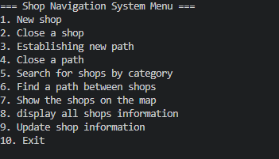
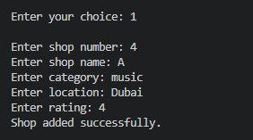
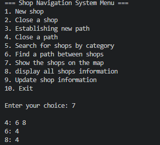

Shop Finding And Navigation System
This advanced Java project involved developing a program that allows users to add stores, create routes between them, search for specific stores, and navigate through them using a combination of data structures and algorithms. The project required extensive use of object-oriented programming (OOP) principles, leveraging classes and objects to model stores, routes, and navigation systems effectively. A key challenge was selecting and implementing the appropriate data structures, such as graphs for route mapping, hash maps for quick store lookup, and trees for efficient searching and sorting. Graph traversal algorithms like Dijkstra’s and A* were used to calculate optimal navigation paths, while breadth-first and depth-first search algorithms were applied for exploring routes.

Managing multiple interconnected objects, ensuring data consistency, and handling complex relationships between stores and routes pushed the boundaries of my understanding of OOP design patterns. The project required building robust class hierarchies, applying encapsulation, inheritance, and polymorphism to create scalable and maintainable code. Additionally, I implemented error handling, optimized data access methods, and ensured smooth interaction between various program components. This project not only strengthened my Java programming skills but also enhanced my problem-solving abilities by applying advanced algorithmic thinking to real-world scenarios.

